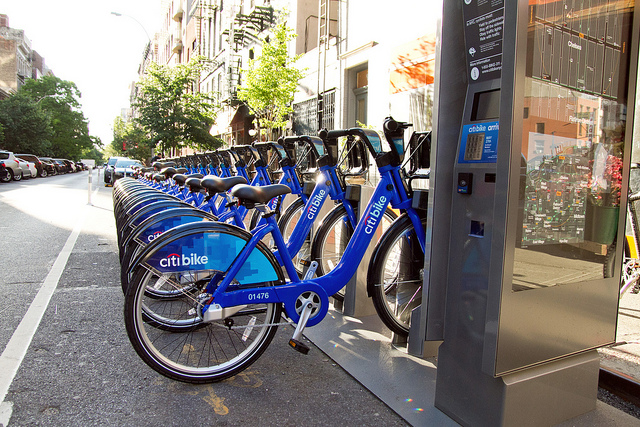
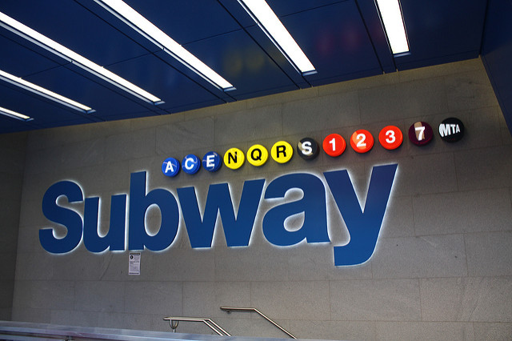

Emma have skipped her last class to get closer to the barricade for her favortie artist. She needs to decide whether to take the Citi bike or take the subway to the venue. What would she choose?
 CitibikeCitibike by Robyn lee
 SubwaySubway by Massimo
Reset